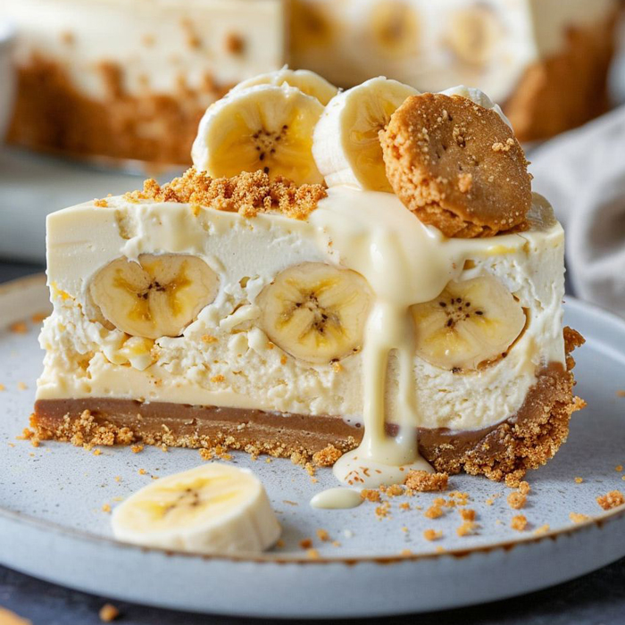

Restaurant Chez Gato
Le restaurant Chez Gato propose une variété de desserts délicieux à manger sur place ou à emporter. Notre menu comprend des gâteaux, des tartes, des biscuits et d'autres douceurs sucrées, tous préparés avec des ingrédients de haute qualité et une attention particulière aux détails. Que vous cherchiez un dessert pour une occasion spéciale ou simplement pour satisfaire votre envie de sucré, Chez Gato a quelque chose pour tout le monde. Venez nous rendre visite et goûtez à nos délicieuses créations!

Témoignages
Clients satisfaits
Sophie Durocher
J'ai adoré mon expérience chez Chez Gato! Le gâteau au chocolat était absolument divin, et le service était impeccable. Je recommande vivement ce restaurant à tous les amateurs de desserts!
Jean Tremblay
Chez Gato est devenu mon endroit préféré pour les desserts. Leurs tartes aux fruits sont incroyables, et j'apprécie toujours la variété de choix sur leur menu. Le personnel est également très amical et accueillant.
Marie-Louise Tremblay
Je suis une grande fan de Chez Gato! Leurs biscuits aux fraises sont à tomber par terre, et j'aime aussi leurs gâteaux à l'érable et aux noix de pécan. C'est l'endroit idéal pour satisfaire mes envies de sucré!
Pierre Martin
Chez Gato offre une expérience culinaire exceptionnelle. Leurs desserts sont non seulement délicieux, mais aussi magnifiquement présentés. J'ai toujours hâte de découvrir leurs nouvelles créations sucrées!
Michel Dubois
Je recommande vivement Chez Gato à tous ceux qui aiment les desserts de qualité. Leurs gâteaux sont moelleux et riches en saveur, et leur service est toujours rapide et amical. C'est un endroit que je fréquente régulièrement pour satisfaire mes envies de sucré!
Claire Dubois
Chez Gato est un véritable joyau pour les amateurs de desserts. Leurs tartes aux fruits sont fraîches et délicieuses, et leurs gâteaux sont tout simplement divins. C'est l'endroit idéal pour une pause sucrée ou pour célébrer une occasion spéciale!